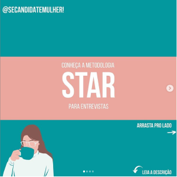

Aquecimento
Enquanto o dia do Speed Hiring não chega que tal ir se preparando?
Existem hoje várias iniciativas que ofertam
informação,
capacitação e incentivo para mulheres que desejam entrar,
permanecer e crescer na área de tecnologia.
Separamos conteúdos muito legais publicados por parceiras
que, como nós, abraçam essa causa. Dá uma conferida. ;)
-

Método Star
-
Impressionando
-
Pretensão Salarial